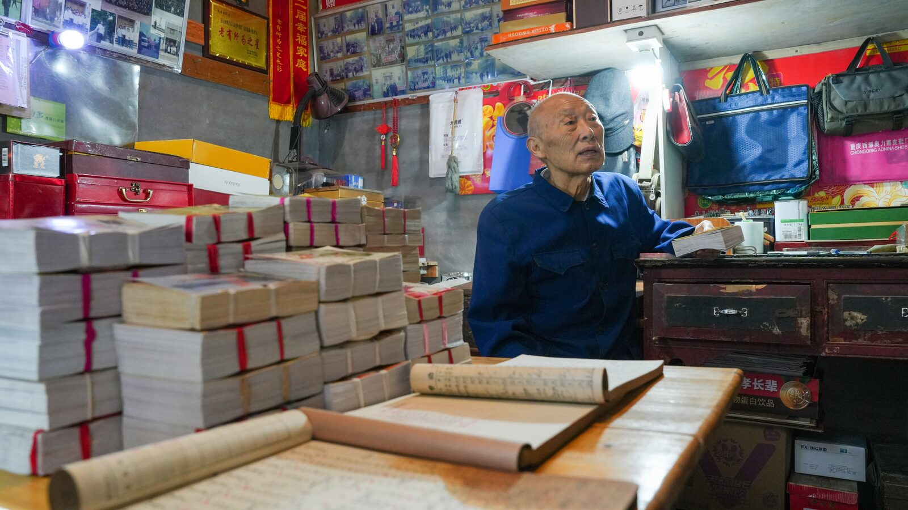
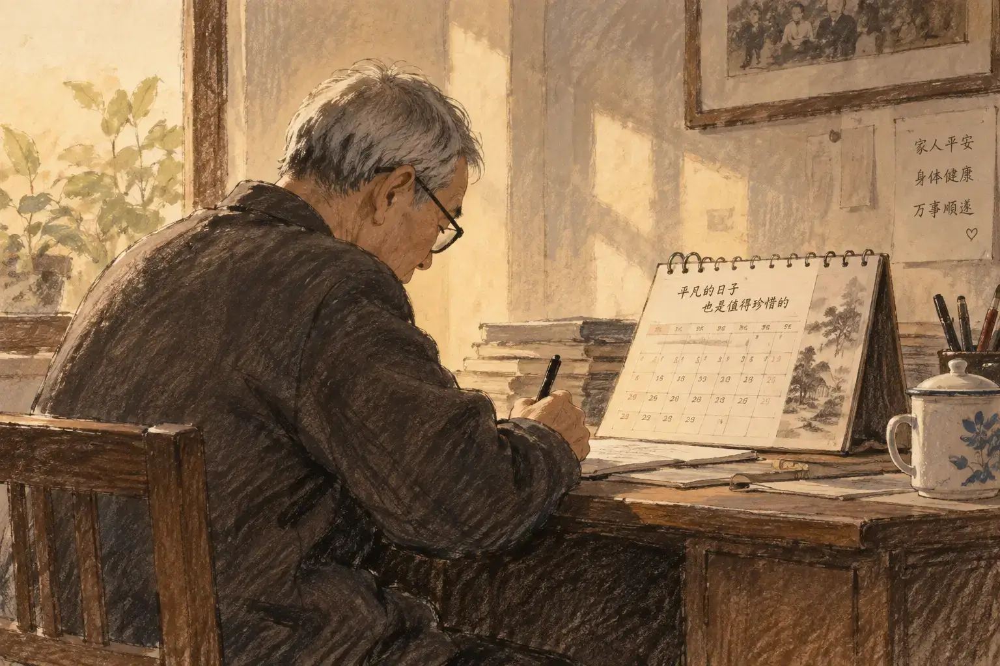
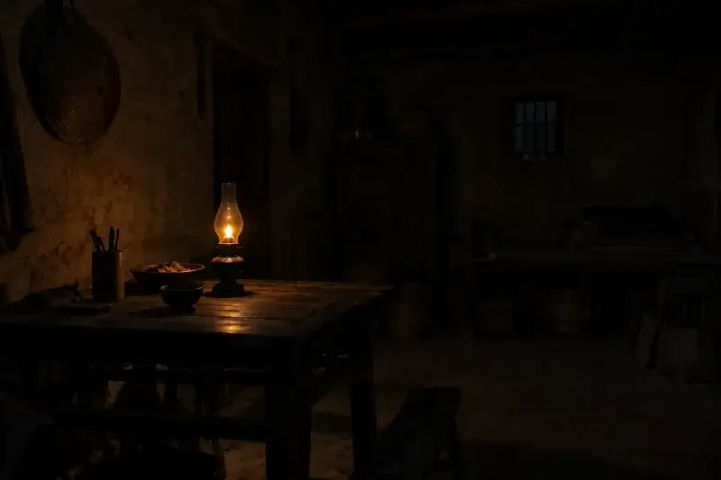
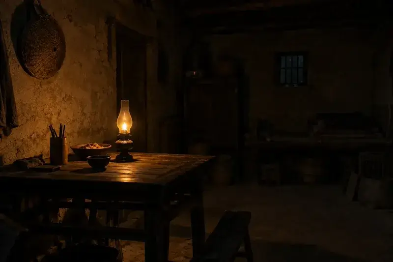
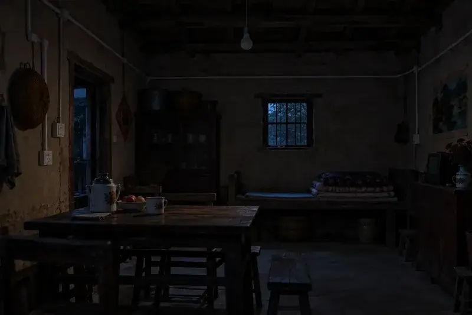
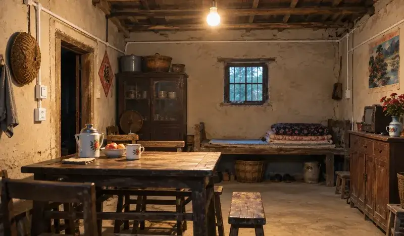
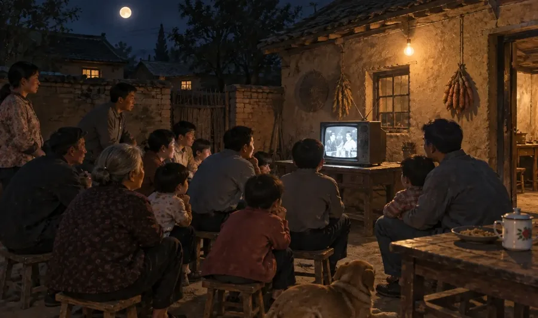
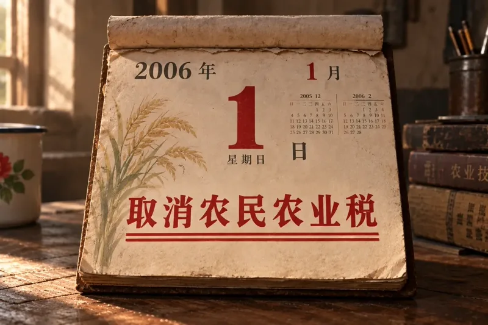

一份献给时间的礼物
40本台历见证变迁
2026年9月28日， 巴中市平昌县元山镇元山社区85岁老党员陈治国， 将自己连续记录了40年的40本台历， 郑重捐给县档案馆， 为共和国生日献上了一份特殊的礼物。
01 打开时间
左右滑动看上一张/下一张，或展开浏览全部
40本
台历
台历
1987—2026
翻开40年
一位老党员40本台历里的家国变迁
02 记录改变
初心 · 根脉
笔从未停歇

1987年正月初一，他在第一本台历上写下：“新的一年，希望日子越过越好。”40年，14600多个日夜，他的笔从未停歇。
02 记录改变
1987 · 告别煤油灯
家里亮起电灯




左右拖动
1987年7月14日，特请张公电管所管电员王云述来家，在土墙上安好正规线路、插座和开关，正式安全用电。
02 记录改变
1990 · 第一台电视机
方寸荧屏，看见远方

1990年4月1日，今日买上海牌的14英寸黑白电视机一部花费387元。
02 记录改变
2006 · 农业税取消
两道红线，划过千年

2006年1月1日，看新闻，取消农民农业税！
03 日子变好
柴米油盐里的时代
日子越过越好
四次落笔，四个普通家庭的生活切面
03 日子变好
1990—2020
腰包越来越鼓
台历记录的年货开支
点击台历时间查看当年账目
03 日子变好
一块一块，把日子拼完整
拼出好日子
好日子，是拼出来的。
拖动拼图，或依次点击两块进行交换
04 共同记忆
传承 · 接力
记录不会停下
“父亲用台历，我用手机。方式不同，但初心一样。时代在变，记录的方式在变，但我们爱党、信党、跟党走的初心永远不会变。”——陈芳
04 共同记忆
2026 · 捐赠献礼
我决定把40本台历
捐赠给档案馆
一个人的日常，成为一座城共同的记忆。
1987—2026 · 四十年，四十本台历